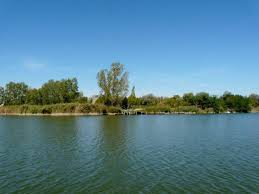

Strandolós oldal
Balaton
A Balaton Közép-Európa legnagyobb tava, és nyáron rengeteg turistát vonz. A sekély, meleg víz különösen ideális a családok számára. Kerékpárút veszi körül, így könnyen felfedezheted két keréken is. Az északi parton található dombok és hegyek gyönyörű látványt nyújtanak, míg a déli part homokos strandokkal rendelkezik. A Tihanyi-félszigeten egy lenyűgöző apátság található, amely 1055-ben épült. Nyáron számos fesztivál, mint a Balaton Sound, élénkíti a környéket. Vitorlázás, vízisí és sok más vízi sport központjaként is ismert. A környező falvak és városok egyedi hangulatot és történelmet kínálnak. Télen a befagyott tó korcsolyázásra és jégvitorlázásra is alkalmas. A Balaton-felvidéki borok kóstolása kihagyhatatlan élmény.
Tisza-tó

A Tisza-tó Magyarország legnagyobb mesterséges tava, ami természetvédelmi területként is ismert. A tó körül húzódó kerékpárút lehetőséget ad, hogy felfedezd a gyönyörű tájat és a vadon élő állatokat. A madármegfigyelők számára igazi paradicsom, hiszen sok különleges faj található itt. A tó ideális helyszín kajakozásra és kenuzásra, mivel a vize nyugodt és sekély. A tavat rengeteg horgász is látogatja, hiszen gazdag halállománya van. A Tisza-tavi Ökocentrum Poroszlón található, ahol interaktív kiállítások és akváriumok mutatják be a tó élővilágát. A környező falvak és városok barátságos hangulatukkal és hagyományaikkal hívogatják a látogatókat. Nyáron a strandolók is előszeretettel keresik fel a tavat, mivel a sekély víz gyorsan felmelegszik. A tó különböző szigetei és öblei izgalmas kalandokat kínálnak a természetkedvelők számára. Az évente megrendezett Tisza-tavi Napok fesztivál színes programokkal várja az érdeklődőket.
Szelidi-tó
A Szelidi-tó Magyarország egyik rejtett gyöngyszeme, amely a természetkedvelők és a pihenni vágyók kedvelt úti célja. A tó kristálytiszta vize és homokos partjai ideálisak a fürdőzéshez és a napozáshoz. A környező terület bővelkedik természeti szépségekben és gazdag növény- és állatvilágban, ami remek lehetőséget nyújt a természetjáróknak. A tó partján kialakított sétány és bicikliút lehetőséget ad a kellemes sétákra és kerékpározásra. A horgászok is szívesen látogatják a Szelidi-tavat, hiszen a víz gazdag halállománya mindig ígéretes fogásokat tartogat. A tó körül található kempingek és szálláshelyek biztosítják a kényelmes pihenést. A környékbeli éttermekben és vendéglőkben pedig ízletes helyi specialitások várják a vendégeket. A Szelidi-tó ideális helyszín családi nyaralásokhoz és baráti kirándulásokhoz is. Az itt megrendezett rendezvények és fesztiválok mindig különleges élményt nyújtanak. A tó partján elhelyezkedő kilátók pedig csodálatos panorámát kínálnak a látogatóknak.